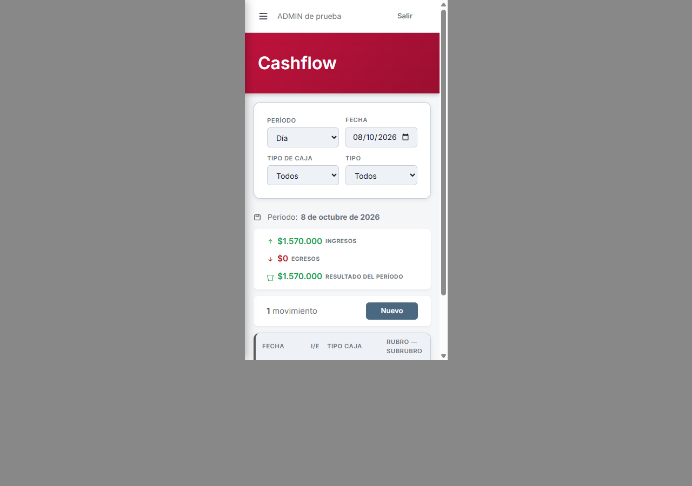
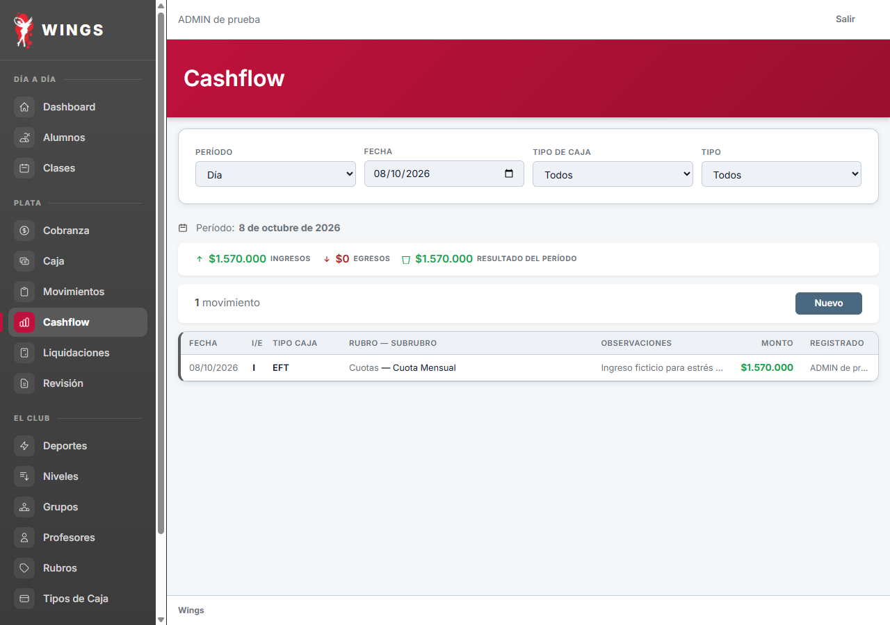
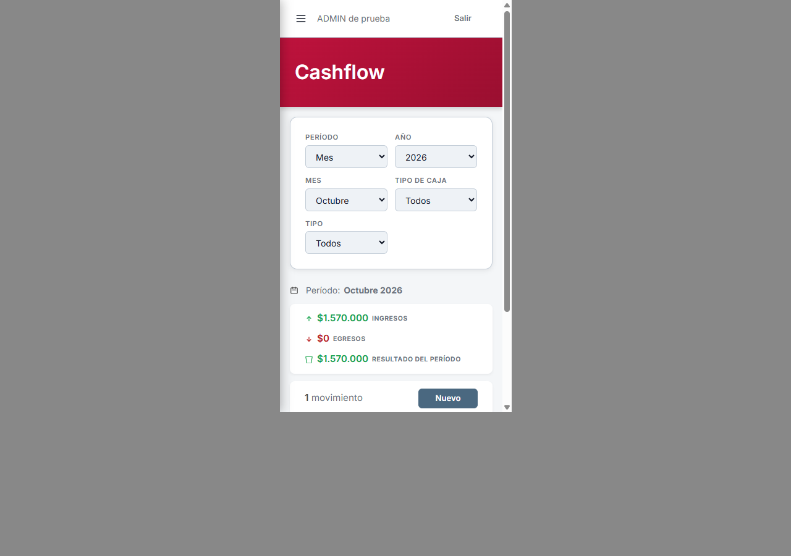
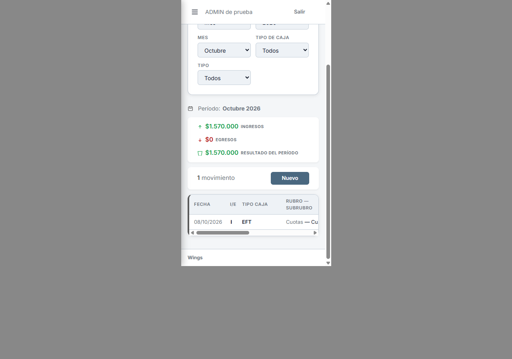
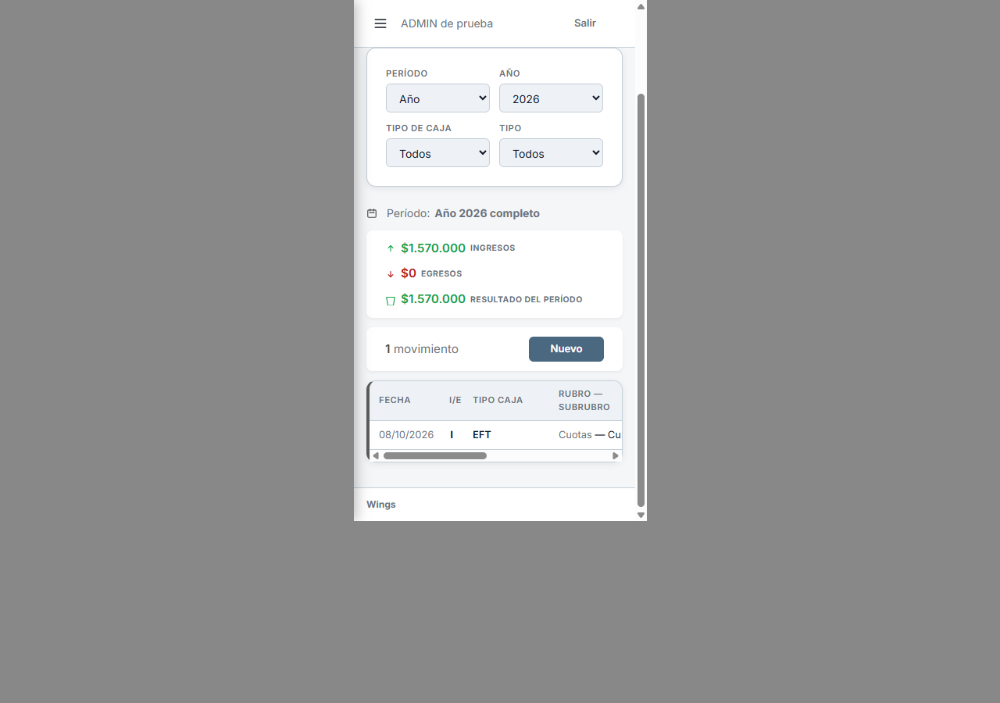

A10 · resultado aplicado
Diseño aprobado por Carlos: «Me gusta, A10 Aprobado». Aplicado localmente; sin desplegar.
Día


Ver escritorio

Semana


Ver escritorio
Mes


Ver escritorio
Año


Ver escritorio
Destino de Nuevo · formulario completo


Ver formulario en escritorio

24 capturas de Laravel real con variantes desactivadas, base de pruebas Codex. Misma geometría de filtros, rango y filas que las 20 capturas de la propuesta. Resultado del período sin saldo inicial. Intervalos/cálculos verificados por Claude; Limpiar comprobado con clics reales en los cuatro modos. Saldo acumulado de Reportes pendiente.